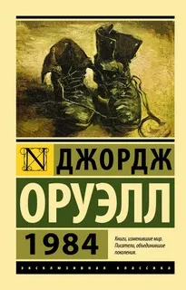
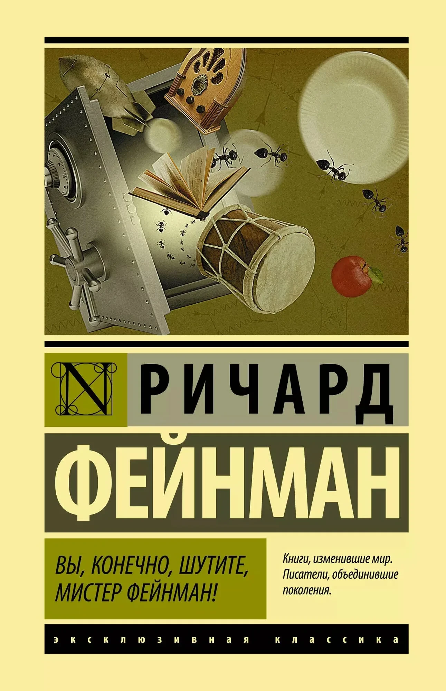
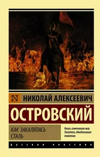
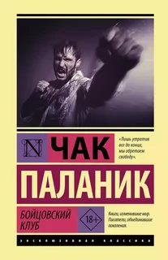
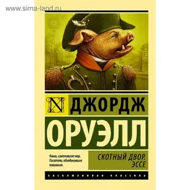

Никита
📚 КнигиПривет! Я Никита, студент первого курса. Обожаю читать — в метро, на парах, перед сном. Люблю классику, антиутопии и книги, которые заставляют думать.
Веду книжный блог и мечтаю однажды написать свою книгу. А пока делюсь тем, что зацепило меня.

Джордж Оруэлл — «1984»
Ты думаешь, ты свободен. Прочитай — и поймёшь, что твои мысли уже кто-то контролирует. Станет жутко. Но лучше жуткая правда, чем красивая ложь.

Ричард Фейнман — «Вы, конечно, шутите, мистер Фейнман!»
Эта книга вышибает скуку. Гений-хулиган показывает, что жить интересно — это выбор. После неё сам захочешь делать глупости и кайфовать от каждого дня.

Николай Островский — «Как закалялась сталь»
У тебя болит голова? Ты устал? Пацан без ног, без глаз и в 16 лет не ныл. Коротко: это пощёчина твоей лени. Прочитаешь — станет стыдно жалеть себя.

Чак Паланик — «Бойцовский клуб»
Ты — раб своей икеевской полки и кредита за айфон. Паланик рвёт этот уютный мир в клочья. Книга бьёт по лицу. И это то, чего тебе не хватало.

Джордж Оруэлл — «Скотный двор»
Все животные равны, но некоторые — свиньи с дубинками. В 100 страницах — вся схема, как любую революцию превращают в диктатуру. Прочти, чтобы не вестись.